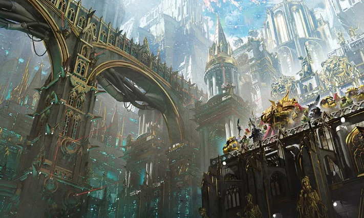

Dossier Historique 001.M30
L’Imperium de l’Humanité n’est pas né d’un empire stable. Il est né d’un effondrement.
Avant son existence, l’Humanité dominait la galaxie. Technologie avancée. Expansion rapide. Colonisation massive.
LES PREMIERS ÂGES
Puis vint la chute.

L’Âge des Luttes plongea l’Humanité dans le chaos. Tempêtes warp. Isolement des mondes. Effondrement des communications. Perte massive de connaissances.
Les colonies furent abandonnées. Les civilisations s’effondrèrent. Terra elle-même devint un champ de ruines.
Seigneurs de guerre. factions techno-barbares. conflits constants.
L’UNITÉ PAR LE FER
L’Humanité survécut. Mais elle ne dominait plus rien.
C’est dans ce contexte que l’Empereur se révéla.
Il unifia Terra par la guerre. Il détruisit les anciens pouvoirs. Il imposa une vision.
Une Humanité unie. Rationalisée. Libérée de la superstition.
L’HÉRITAGE DU TRÔNE
Ce projet donna naissance à la Grande Croisade.
Des flottes furent lancées dans la galaxie. Des mondes humains redécouverts. Des empires détruits. Des alliances forcées.
L’Imperium prit forme.
Mais cette expansion contenait déjà ses failles.
La création des Primarques. Leur dispersion. Leur retour.
Et finalement, leur trahison.
L’Hérésie d’Horus brisa l’unité fragile.
L’Imperium survécut. Mais transformé.
L’Empereur fut placé sur le Trône d’Or. Le projet initial abandonné. La foi remplaça la raison.
Depuis, l’Imperium ne progresse plus réellement.
Il survit.
Guerre constante. Ressources limitées. Institutions rigides.
Un empire gigantesque, incapable de s’arrêter, incapable d’évoluer.
Il faut comprendre ceci.
L’Imperium n’est pas une réussite.
C’est un état de survie prolongé.
Une structure maintenue en vie par la peur, la foi, et la guerre.
Fin de l’extrait. Toute tentative d’analyse critique de l’Imperium pré-impérial doit être encadrée.